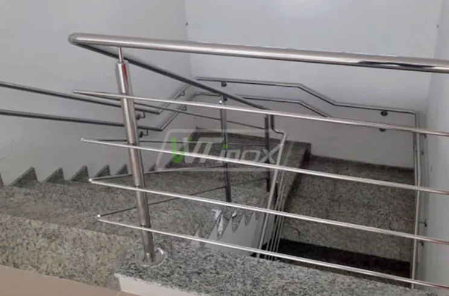

Corrimões em Inox
Resistência, elegância e segurança para escadas e áreas de circulação.
Projetos sob medida para residências e empresas em Natal e região
ENTRE EM CONTATO COMIGO AGORAA Ozemir Inox, liderada por José Ozemir Cordeiro da Silva, atua na Cidade da Esperança - Natal/RN, especializada na fabricação e instalação de corrimões, guarda-corpos e estruturas em inox, além de serviços de solda e usinagem.
Oferecemos soluções em inox com qualidade, segurança e acabamento profissional.
Resistência, elegância e segurança para escadas e áreas de circulação.
Proteção moderna e sofisticada para varandas, mezaninos e sacadas.
Projetos exclusivos em inox, feitos sob medida para cada cliente.
Serviços de soldagem com acabamento impecável para máxima durabilidade.
Peças técnicas e sob medida com precisão e qualidade profissional.
Reparos e ajustes em corrimões, guarda-corpos e estruturas de inox.
Entre em contato com nossa equipe para orçamento e mais informações.
FALE COM UM DOS NOSSOS ESPECIALISTASConfira o